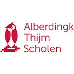
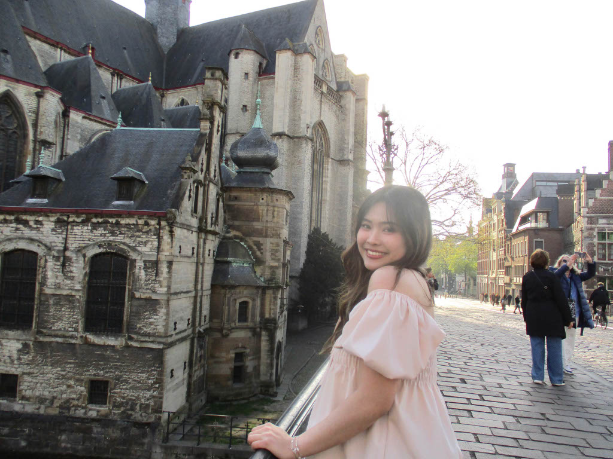
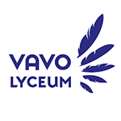
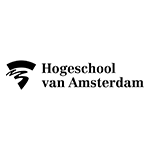

Alberdingk Thijm College
september 2020 - juli 2023
Havo Diploma: Natuur & Techniek profiel met informatica en kunst als extra vakken
Mijn naam is Piyathida en ik ben eerstejaars student Communication and Multimedia Design aan de Hogeschool van Amsterdam. In mijn opleiding heb ik al aan verschillende projecten gewerkt. Ik heb bijvoorbeeld digitale ontwerpen gemaakt in Figma, fysieke prototypes gebouwd in het Makerslab en websites leren programmeren. Ik ben een open en gemotiveerde persoon die goed zelfstandig en in een team kan werken. Ik sta altijd open voor nieuwe uitdagingen en wil graag blijven groeien en leren.


september 2020 - juli 2023
Havo Diploma: Natuur & Techniek profiel met informatica en kunst als extra vakken

september 2023 - juli 2024
Havo Diploma: Havo eenjarig (deeltijd) Natuur & Techniek profiel met informatica en kunst als extra vakken

september 2024 - heden
Communiation and Multimedia design (voltijd bachelor)